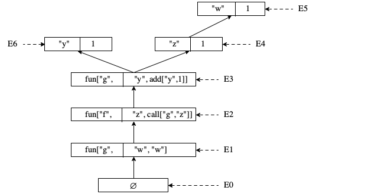

3 Algebra, Your Second Programming Language
Your first algebra course expanded your programming experience. It introduced variables and functions. But your teacher remained in control, programming you and asking you to play computer.
This chapter uses your knowledge of simple algebra to expand on the ideas of the previous chapter. As it turns out, the introduction of variables and functions raises a number of fundamental issues that algebra courses may gloss over, but programming languages must explicate. That most important of these is the notion of scope. At the same time, the study of programming languages must reinforce your knowledge of basic algebra concepts, most importantly, the idea of substituting values for variables.
So, this chapter connects the dots all the way from the very first function you encountered in algebra courses to the core of the programming languages and the basic ideas about programming you likely encoountered in your very first course.
3.1 Variables and Functions
Problem 1 Let f(x) = 3 * x2 - 2 * x + 4.
What is the value of f for 0, 7, and -3.
the name f is defined in the first line
the occurrence of f is a reference to this definition;
x is a name but plays a different role than f; and
the meaning of the phrase “the value of f for” is defined in terms of substitution of values for variables, plus some arithmetic. For example,
f(7)
=
3 * 72 - 2 * 7 + 4
by substituting 7 for x in the definition of f
=
3 * 49 - 2 * 7 + 4
by multiplication
=
147 - 2 * 7 + 4
by multiplication
=
147 - 14 + 4
by multiplication
=
137
by addition and subtraction.
Let π stand for 3.14 in the following exercise.
Problem 2 Let A(r) = π * r2.
What is the value of A for 0, 7, and -3.
Problem 3 Let f(x) = x2 - 17.
What is the value of f for 3, -1, and 2.
explicit declaration of names, that is, points that define function names (f, A) and variable names (x, r);
static scope, that is, the idea that occurrences of variables point to a particular defining point in well-delineated textual regions; and
substitution of values for names as the means to obtain meaning.
This chapter gradually extends the simplistic model of a programming language from Arithmetic, Your First Programming Language with these ideas. Doing so produces a language that Computer Science Theoreticians consider equivalent to any full-fledged, classical model of computing. Software developers and programmers, though, want more than that from their major tool, and The Dimensions addresses this idea in detail.
Pragmatics Variable declarations and static scope for names in programs
evolved from a good idea to a critical, but invisible aspect over the decades.
Substitution is a front-line tool for programmers who wish to reason about the
behavior of their code—
When a programming language demands the explicit declaration of names—
Some of the first programming languages, and even some recent ones, permit programmers to introduce and use a variable wherever they need it. Given the serious consequences, no experienced software developer should ever choose a language with implicit variable declarations over one that demands explicit declarations.
Warning In some programmer communities, the word “scope” refers to unrelated ideas.
Static scope is critical to programming in teams. A software developer needs to know that choosing a name for a class, a method, a loop variable, and so on cannot be invalidated by a choice that is made for a different textual region, that is, a module, a class, a method, and so on. For example, a parameter choice of x for one method does not mean that x is ruled out for the next method.
Today, no software developers would doubt the value of static scoping, but for several decades, static scoping had to compete with dynamic scoping, a resolution of a variable’s reference to its declaration during program execution.
A programmer must have some understanding about what a program computes when it runs, how a component behaves when it is used by a client module. Since variables and functions are the simplest addition to arithmetic, substitution becomes a natural concept. Algebra teaches that variables represent unknown yet fixed quantifies and that, once the value becomes known, we just replace the variable with the value. A Java method for computing the area of a circle is like A above and its workings can most easily be understood as if the program were an algebra exercise. More generally even, mathematics teaches that defined names can always be replaced with their definition.
While substitution is intuitive, it poses two problems. First, it is rather inefficient. Second, substitution does not work in the presence of assignment statements, a common feature of most programming languages. Both problems are easily resolved, though.
Abstract Syntax: Functions and Variables The starting point of this chapter is a small programming language that extends AST-arithmetic with variables and functions similar to the way algebra courses do.
struct let [name,right] struct fun [name,parameter,body]
struct call [name,argument]
struct block [definition,body]
Number |
| add[AST-algebra,AST-algebra] |
| mul[AST-algebra,AST-algebra] |
| Name |
| call[name,AST-algebra] |
| block[AST-def,AST-algebra] |
|
let[Name,AST-algebra] |
| fun[Name,name,AST-algebra] |
|
int y = 4; |
let int v = 4; |
def y = 4 |
Make up examples of fun["g","x",add["x",4]] in some of the languages you know.
Design a concrete JSON syntax for the abstract syntax introduced here and then implement a parser that maps the concrete syntax into the above ASTs.
3.2 Static Scope
block[ fun["f","x",add[mul[3,mul["x","x"]],add[mul[-2,"x"],4]]] call["f",-3]]
block[ let["π",3.14] block[ fun["A","r",mul["π",mul["r","r"]]] call["A",7]]]
block[ fun["f","x",add["x",2]] block[ fun["g","x",mul[4,"x"]] [block fun["h","x",add[call["f","x"],call["g","x"]]] call["h",42]]]]
block[ let["x",42] block[ fun["f","x",add["x",21]] call["f","x"]]]
block[ let["f",42] block[ fun["f","x",add["x",21]] call["f","f"]]]
Names used to define variables in let and functions in fun exist at the same level or, as we usually say, in the same space.
In this case, the program is syntactically correct but both occurrences of "f" on the last line refer to the fun definition. Once the program is run, "f" will attempt to add 21 to itself—
-and cause an error. The two kinds of definitions introduce names in two distinct spaces: variable names (also called constants) and function names.
Here the program is syntactically correct because the two occurrences of "f" refer to two different definitions: the first one refers to the function and the second one to the variable.
The alternative comes with the downside that functions can’t easily be used as arguments to other functions.
This book uses the “one space for all names” approach.
block[ let["x",add["x",3]] block[ fun["f","x",call[...,call["f",add["x",-1]]]] call["f",42]]]
Conventional programming languages come with two kinds of definitions: non-recursive variable definitions and recursive function definitions. This choice is also quite intuitive because defining "x" in terms of itself like in the preceding example is meaningless, though recursive functions are common.
A let definition is in scope in the body part of its immediately surrounding block.
The function name of a fun definition is in scope in the body part of itself and in the body part of its immediately surrounding block.
The parameter name of a fun definition is only in scope in the body part of itself.
Exercises The following exercises illustrate some of the graphical techniques that programming language designers use to discuss scope.
Exercise 31. What is missing from making recursive functions useful in Algebra?
Exercise 32. Translate Problem 3 from the preceding section into AST-algebra. Identify the scope of "f" and "x" in the result.
block[ let["x",add[2,2]] block[ fun["f","y",add["x",block[let["x",21],mul["x","x"]]]] call["f","x"]]]
block[ let["x",add["x",2]] block[ fun["f","x",mul[2,call["f",add["x",-1]]]] mul[3,x]]]
3.3 Static Checking: Scope
The definition of a programming language must define scope. Its implementation
checks that programs live up to basic scoping rules before they are run,
just like they check that programs live up to the grammatical rules. Due to
this temporary relationship, such checks are called static. Following
the discussion of the preceding section, contemporary languages tend to demands
that all names in a program come with definition points and that no variable is
free—
whether function names may occur anywhere or only in function calls.
For now, we choose to follow algebra, meaning the names of functions may show up only in function positions of call structs. A consequence of this choice is that parameter names may not in the function position of call structs. If they did show up there, the function would have to be passed a function as an argument value.
AST-algebra --> Boolean |
The code sketch in figure 20 shows the essence of a static-scope checker. The main function defers to a function that produces all free variables in a program in a single list. If this list is empty, scope_checker returns true, otherwise false.
Notation The code sketch uses stack-like lists: [] and () are both the empty list. A one-element list is written as [a]. The expression (a . l) adds element a to a list l, and l1 ++ l2 denotes the concatenation of two lists.
// AST-algebra ---> Boolean
// list the free variables in this `ast`
def scope_checker(ast)
return [] == free_in_expr[ast,(),()]
// `let_vars` is the list of `let` defined variables and parameters
// `fun_vars` is the list of `fun` define function names
// AST-algebra List[Name] List[Name] ---> List[Name]
// list the free variables in this `ast`
def free_in_expr(ast,let_vars,fun_vars)
case ast is a
number -> return []
add[lft,rgt] -> ... elided ...
mul[lft,rgt] -> ... elided ...
name ->
if (name is in let_vars)
return []
else
return [name]
call[fn,arg] ->
if (fn is in fun_vars)
return free_in_expr[arg,let_vars,fun_vars]
else
return fn . free_in_expr[arg,let_vars,fun_vars]
block[def,bdy] ->
{free, nu_let_vars, nu_fun_vars} = free_in_def[def,let_vars,fun_vars]
return free ++ free_in_expr[bdy,nu_let_vars,nu_fun_vars]
// AST-def List[Name] List[Name] --> {List[Name], List[Name], List[Name]}
// the free variables in this `ast` plus the newly defined names
def free_in_def(ast,let_vars,fun_vars)
case ast is a
let[lhs,rhs] ->
nu_let_vars = (lhs . let_vars)
return
{free_in_expr[rhs,let_vars,fun_vars], nu_let_vars, fun_vars}
fun[fname,para,bdy] ->
nu_fun_vars = (fname . let_vars)
local_let_vars = (para . let_vars)
return
{free_in_expr[bdy,local_let_vars,nu_fun_vars], let_vars, nu_fun_vars}
The “work horse” of the code consists of two functions: free_in_expr and free_in_def. As suggested in Prologue, this arrangement matches the grammar of AST-algebra and AST-def, two data descriptions that refer to each other. The two functions refer to each other in the same way and the same places as the two data definitions. Furthermore, both functions use a so-called accumulator design, meaning they consume additional arguments about context-sensitive information. Here one accumulator represents the list of fun defined names that the functions have encountered between the very root of the AST and the current position. The other one is the list of let defined variables and parameters that the functions have seen up this point.
The free_in_expr function returns the list of all undefined names in an expression. Its most complex code is the case for block in free_in_expr. A block node contains an AST-def and an AST-algebra. The first defines one name whose scope includes the second node. Hence, free_in_expr defers to free_in_def to produce the relevant information; the result is the concatenation of the free variables in the definition and the free variables in the block’s body.
The free_in_def function delivers a three-part result: (1) the list of undefined names in the definition, specifically in the right-hand side of a let node and the body of a fun node; (2) the list of let defined names; and (3) the list of fun defined function names. Its most complex case concerns the fun-shaped AST. Such a definition adds the function name to the scope of the function’s body and the block’s body, which explains the local definition of nu_fun_vars. By contrast, the function parameter’s scope is just the function body, which is why local_let_vars is used only for the call to free_in_expr. The result in this case consists of the free variables in the AST-algebra sub-expression, the given let_vars, and the given fun_vars extended with the function name. In short, the code is a near-direct translation of the English description into code.
Exercise The exercises ask you to adopt the code sketch of figure 20 to alternatives of the Algebra language.
Exercise 35. Implement the static-scope checker for the language of Algebra in your chosen programming language.
When you have a complete implementation, including a comprehensive unit test suite, integrate it with the parser from exercise 30 into a complete program that reads a JSON Algebra program from STDIN. If the Algebra program satisfies all grammatical and scoping rule, the program prints the JSON string "true" to STDOUT. If it violates a grammatical rule, the program prints "syntax error". If it fails the static-scope check, the output is "undefined identifier".
let[Name,AST-algebra] |
| fun[Name,List[name],AST-algebra] |
Implement a static-scope checker for this variant of Algebra.
Exercise 37. In contemporary programming languages functions are ordinary values, just like numbers or lists. The scoping rules for this variant of the Algebra language permit the names of functions and parameters in the function position of a call node.
Modify the code sketch of figure 20 to cope with this generalized variant of the Algebra language. Note that the generalization simplifies the code.
Adapt the solution of exercise 35 to this variant.
3.4 The Meaning of Variable Definitions
The meaning of names demands a careful investigation. We start with the meaning of let defined names in this section. The next sections move on to fun.
Let π stand for 3.14 in the following exercise.
Problem 2 Let A(r) = π * r2.
What is the value of A for 0, 7, and -3.
Problem 2 Let A(r) = 3.14 * r2.
What is the value of A for 0, 7, and -3.
current state
next state
block[let[x,nn],ae2]
==
ae2 [x <- nn]
ae2 stands for an arbitrary expression and nn stands for any number
The notation ae2 [x <- nn] is common in programming languages to express the substitution of nn for x in its scope within ae2. While it looks simple and is intuitive, getting this function correct is non-trivial. We introduce it in stages, starting here.
// AST-algebra Name Number ---> AST-algebra
// substitute `num` for `var` in its scope within `ast`
def substitute(ast,var,num)
case ast is a
number -> return ast
add[lft,rgt] -> add[substitute(lft,var,num),substitute(rgt,var,num)]
mul[lft,rgt] -> ... elided ...
name ->
if (ast is var)
return num
else
return ast
call[fn,arg] ->
call[fn,substitute(arg,var,num)]
block[let[lhs,rhs],bdy] ->
if (lhs is var)
return block[sub_def((let lhs rhs),var,num),bdy]
else
return
block[sub_def((let lhs rhs),var,num),
substitute(rhs,var,num),var,num]
def sub_let(ast,var,num)
case ast is a
let[lhs,rhs] -> let[lhs,substitute(rhs,var,num)]
...
Figure 21: Substituting a number for a variable in simplified AST-algebra
Figure 21 displays a code sketch for the substitution function for AST-algebra if it includes only let definitions. The function is mostly a standard recursive algorithm that matches the data description of the abstract syntax trees. The last clause, however, deserves special attention. It does not just blindly traverse the block structure, but checks whether the let defined variable is equal to the one that is being replaced.
Stop! Why does the function compare the names?
block[let["y",1],add[block[let["y",add["y",1]],"y"],"y"]]
The Stack Machine with Substitution Arithmetic, Your First Programming Language explains how to derive a stack machine from the formal system of calculations that represents an algebra student solving a homework. It is straightforward to adapt this abstract state machine to deal with let defined names via substitution.
Frame = |
add[{--},AST-algebra] |
| add[Number,{--}] |
| mul[{--},AST-algebra] |
| mul[Number,{--}] |
| block[let[name,{--}],AST-algebra] |
The second step is to add a state transition rule to figure 18. See figure 22 for the revised rule. If the control state matches a block with a let definition whose right-hand side is not a value, the machine pushes an instance of the new kind of stack frame and puts the right-hand expression into the conrrol-code register. Once this expression becomes a value in the context of such a new stack frame, the value is substituted into its scope, which is retrieved from the stack via a pop.
current state
next state
control code
stack
control code
stack
block[ let[x,ae1] ae2]
ae1
K, block[ let[x,{--}] ae2] nn
K, block[ let[x,{--}] ae2]
ae2 [x <- nn]
Legend (1) ae1 ae2 ae stand for expressions; (2) x represents a name; and (3) nn1 nn2 nn stand for numbers
Figure 22: A stack machine for simple Algebra, plus substittution
Exercise 38. Describe all states, the initial states, and the final states of the CK machine from figure 22 for the simplified AST-algebra language. Complete the set of transitions.
control code |
| control stack |
block[let["y",add[2,2]],mul["y","y"]] |
| {--} |
add[2,2] |
| block[let["y",{--}],mul["y","y"]] |
4 |
| block[let["y",{--}],mul["y","y"]] |
mul[4,4] |
| {--} |
What is barely notable, though, is the duplication of work between this machine and the substitute function. The transition from the second to the third state calls for a use of substitute to realize the ae2 [x <- nn] aspect of the transition, that is, the second rule in figure 22. As noted, substitute traverses the entire expression, finds all occurrences of the given name, and replaces it with a number. When the machine pics up from there, it also traverses the (reconstructed) expression, one node at a time. This double traversal seems like a waste of time. Programming language people have therefore developed a technique that combines the machine’s traversal with substitution and thus explains the work of the latter within the samef ramework as other computational reductions.
Environments come with two kinds of operations. First, the machine uses these tables to look up whether a name is associated with a number and which one. The book combines the two in English but separating them in an implementation is a good idea. Second, environments grow with additions and replacements of associations. The technical term is environment extension and merges the two aspects into one. The notation for environment extension is E [x <- nn]. This operation consumes three inputs (E, x, and nn) and produces a new environment. Regardless of whether x is in E, looking up x in the result is guaranteed to yield nn and nothing else; looking up any other name yields the same result as looking in the E environment. So in this sense, environment extension may add an association or replace an existing one.
a state consists of three registers: a control code, which is an AST-arithmetic; an environment E, which associates all free variables in the control code with a value; and a stack K, which represents the rest of the computation;
an initial state consists of an expression without free variables in the control-code register, an empty environment, and empty stack;
a final state has a value in the control-code register and empty environments and stacks in the other registers; and
the CEK-machine’s essential transitions are displayed in figure 23 for the subset of AST-algebra that comes with just let definitions.
current state
next state
code
environment
stack
code
environment
stack
block[ let[x,ae1] ae2]
ae1
K, block[ let[x,{--}] ae2] / E nn
∅
K, block[ let[x,{--}] ae2] / E
ae2
E [x <- nn]
x
nn
∅
if [x, nn] is in E
(1) ae1 ae2 ae stand for expressions; (2) x represents a name; and (3) nn1 nn2 nn stand for numbers
The transitions of figure 23 describe how the CEK machine deals with a let definition in a block. It pushes the block frame onto the stack, with the current environment. Moving the environment is necessary because the block’s body mat contain free variables and their meaning is in the E environment. The second rule shows how this E gets back into the environment register; when the control code contains just a number and the top-most stack frame is a block with a hole, the machine drops the current environment and moves the one from the stack to the register. The final rule is about variables in the control-code register. Compared to the substitution-based CK machine, the machine places the value of a variable into the environment. When it later encounters the same name in the control-code registers, it retrieves the name’s value from the current environment.
add[{--},AST-algebra] / E |
| add[Number,{--}] |
| mul[{--},AST-algebra] / E |
| mul[Number,{--}] |
| block[let[Name,{--}],AST-algebra] / E |
Stop! Why are there no environments in the second and fourth clause of the description?
block[ |
let["y",1] |
add[ |
block[ |
let["y",add["y",1]] |
y] |
y]] |
The best way to understand such a program is to start with the variable declarations and their scope. In this case, the program contains two let declarations of "y" and thus creates a hole in the scope of the outer one. One definition sets the variable to 1, and the other one to add["y",1], where this occurrence of "y" refers to the outermost definition. Similarly, the last two lines mention "y" and point to two different definitions: the occurrence on the last line refers to the outermost one, and the one on the next-to-last line to the innermost definition. Once you understand the scoping structure, it is straightforward to see that the result of this program is 3.
control code |
| environment |
| control stack | |||||||
|
| ∅ |
| {--} | |||||||
1 |
| ∅ |
| {--}, | |||||||
|
|
| |||||||||
The right-hand side of every let always becomes the control code. The remainder becomes a frame for the control stack, which grows downwards. | |||||||||||
| |||||||||||
|
| ["y", 1] |
| {--} | |||||||
The result is put into the environment, and the body of let becomes the control code. | |||||||||||
| |||||||||||
|
| ["y", 1] |
| {--} add[{--},"y"] / ["y", 1] | |||||||
add["y",1] |
| ["y", 1] |
| {--}, | |||||||
|
| add[{--},"y"] / ["y", 1] | |||||||||
|
| block[let["y",{--}],"y"] / ["y", 1] | |||||||||
y |
| ["y", 1] |
| {--}, | |||||||
|
| add[{--},"y"] / ["y", 1] | |||||||||
|
| block[let["y",{--}],"y"] / ["y", 1] | |||||||||
|
| add[{--},1] / ["y", 1] | |||||||||
1 |
| ["y", 1] |
| {--}, | |||||||
|
| add[{--},"y"] / ["y", 1] | |||||||||
|
| block[let["y",{--}],"y"] / ["y", 1] | |||||||||
|
| add[{--},1] / ["y", 1] | |||||||||
After pealing off three layers from the block expression, the machine extracts the value of "y" from the environment. | |||||||||||
| |||||||||||
add[1,1] |
| ["y", 1] |
| {--}, | |||||||
|
| add[{--},"y"] / ["y", 1] | |||||||||
|
| block[let["y",{--}],"y"] / ["y", 1] | |||||||||
2 |
| ∅ |
| {--}, | |||||||
|
| add[{--},"y"] / ["y", 1] | |||||||||
|
| block[let["y",{--}],"y"] / ["y", 1] | |||||||||
y |
| ["y", 2] |
| {--}, | |||||||
|
| add[{--},"y"] / ["y", 1] | |||||||||
The new environment maps "y" to 2. | |||||||||||
| |||||||||||
2 |
| ∅ |
| {--}, | |||||||
|
| add[{--},"y"] / ["y", 1] | |||||||||
The machine looks up the value of "y", and then it restores the old environment value from the control stack. | |||||||||||
| |||||||||||
add[2,"y"] |
| ["y", 1] |
| {--} | |||||||
y |
| ["y", 1] |
| {--}, | |||||||
|
| add[2,{--}] | |||||||||
1 |
| ∅ |
| {--}, | |||||||
|
| add[2,{--}] | |||||||||
The value of this "y" is 1 as it should be. Stop! Why? | |||||||||||
| |||||||||||
add[2,1] |
| ["y", 1] |
| {--} | |||||||
3 |
| ∅ |
| {--} | |||||||
Exercise 39. While the description of the CEK machine is complete with respect to the states, it is missing a number of transitions for the Arithmetic subset of the simplified Algebra language. Complete the set of transitions from figure 23.
Exercise 40. Implement the transition function from figure 23 for the language of Algebra (minus fun definitions) in your chosen programming language.
When you have implemented the transition function, including a unit test suite, design a driver function to create a complete implementation of the abstract state machine for Algebra.
3.5 The Meaning of Function Definitions
Now that we understand simple variable definitions, it is time to turn to function definitions. The functions in any contemporary language and in this chapter may call themselves recursively. Hence the explanation of their meaning must also explain recursion.
In principle, mathematics always considers names to be replaceable with their definition, recursion needs special care. Plain substitution as in the preceding section cannot possibly work. Since the body of the function may refer to its name, the function definition must stay around. And this means the approach of making definitions disappear does not work; the machine must somehow keep track of them.
The CEK machine of the preceding section already has a mechanism for associating names with values: the environment. What we need is a representations of functions in the environment, because so far it merely associates names with numbers.
block[ fun["g","w","w"] block[ fun["f","z",call["g","z"]] block[ fun["g","y",add["y",1]] mul[call["f",1],call["g",1]]]]]
control code
environment
control stack
block[ fun["f","z",call["g","z"]] block[ fun["g","y",add["y",1]] mul[call["f",1],call["g",1]]]]
[fun["g","w","w"]]
{--}
The code register contains arbitrary AST-algebra expressions.
Because of function calls, the environment contains both fun definitions and ordinary variable-number associations.
Similarly, function calls demand an evaluation of the function argument, and call[fn,{--}] / E is thus a new kind of stack frame. But, in the absence of let definitions, the machine does not need block-based frames.
current state
next state
code
env.
stack
code
env.
stack
block[ fun[fn,x,ae1] ae2]
ae1
E2
call[fn,ae2]
ae2
K, call[fn,{--}] / E nn
∅
K, call[fn,{--}] / E
ae1
E3
if [fun[fn,x,ae1] / E2] is in E; E3 is E2 [x <- nn] [fun[fn,x,ae1] / E2]
x
nn
∅
if [x, nn] is in E
Legend (1) ae1 ae2 ae stand for expressions; (2) fn and x represent names; and (3) nn1 nn2 nn stand for numbers
The first one deals with fun definitions exactly as explained above.
The second one addresses call. When the CEK machine encounters a function call, it moves the argument into the control-code register and remembers the need to call the function with a new frame on the stack.
This method of calling functions on values is unsurprisingly named call by value. See Delayed Evaluation: Call By Name for an alternative also inspired by algebra.
Notice that the call instruction does not push a frame onto the control stack.
In this programming language with algebra-like functions, arguments evaluate to numbers, and it is added to the function’s environment, just like let variables. What the third rule also shows is that the fun definition must be added again because functions just might call themselves.
The last rule shows that retrieving variables works just like in the preceding section. So even if let definitions are missing, the underlying mechanism still exists.
code |
| env. |
| stack | |||||||
|
| ∅ |
| {--} | |||||||
|
| E1 |
| {--} | |||||||
E1 = [ fun["g","w","w"] / ∅] | |||||||||||
| |||||||||||
|
| E2 |
| {--} | |||||||
E2 = [ fun["f","y",call["g","y"]] / E1] [ fun["g","w","w"] / ∅] | |||||||||||
The definition of E2 does not match the corresponding rule in figure 24. We omit the extension with the function itself because it isn’t recursive. | |||||||||||
| |||||||||||
| mul[call["f",1],call["g",1]] |
| E3 |
| {--} | |||||||
E3 = [fun["g","y",add["y",1]] / E2] [ fun["f","y",call["g","y"]] / E1] | |||||||||||
Although E3 contains only one function for "g" the first definition of "g" is still reachable through the E1 associated with "f". | |||||||||||
| |||||||||||
call["f",1] |
| E3 |
| {--}, | |||||||
|
| mul[{--},call["g",1]] / E3 | |||||||||
1 |
| ∅ |
| {--}, | |||||||
|
| mul[{--},call["g",1]] / E3 | |||||||||
|
| call["f",{--}] / E3 | |||||||||
call["g","z"] |
| E4 |
| {--}, | |||||||
|
| mul[{--},call["g",1]] / E3 | |||||||||
This transition shows the first function call. A number in the control code register plus a call["f",{--}] / E3 as the most recently added stack frame means the machine looks up "f" and finds its definition. The argument goes into the environment of "f" and the function body becomes the control code. | |||||||||||
| |||||||||||
"z" |
| E5 |
| {--}, | |||||||
|
| mul[{--},call["g",1]] / E3 | |||||||||
|
| call["g",{--}] / E4 | |||||||||
1 |
| ∅ |
| {--}, | |||||||
|
| mul[{--},call["g",1]] / E3 | |||||||||
|
| call["g",{--}] / E4 | |||||||||
"w" |
| E4 |
| {--}, | |||||||
|
| mul[{--},call["g",1]] / E3 | |||||||||
The function named "f" immediately calls the first "g". | |||||||||||
| |||||||||||
1 |
| ∅ |
| {--}, | |||||||
|
| mul[{--},call["g",1]] / E3 | |||||||||
call["g",1] |
| E3 |
| {--}, | |||||||
|
| mul[1,{--}] | |||||||||
1 |
| ∅ |
| {--}, | |||||||
|
| mul[1,{--}] | |||||||||
|
| call["g",{--}] / E3 | |||||||||
add["y",1] |
| E6 |
| {--}, | |||||||
|
| mul[1,{--}] | |||||||||
| |||||||||||
"y" |
| E6 |
| {--}, | |||||||
|
| mul[1,{--}] | |||||||||
|
| add[{--},1] / E6 | |||||||||
1 |
| ∅ |
| {--}, | |||||||
|
| mul[1,{--}] | |||||||||
|
| add[{--},1] / E6 | |||||||||
add[1,1] |
| E6 |
| {--}, | |||||||
|
| mul[1,{--}] | |||||||||
2 |
| ∅ |
| {--}, | |||||||
|
| mul[1,{--}] | |||||||||
mul[1,2] |
| ∅ |
| {--} | |||||||
2 |
| ∅ |
| {--} | |||||||
Take a second look at the six environments that come about during the execution of the example on the CEK machine. Initially the machine just moves fun definitions into the environment register. For the evaluation of function calls, it retrieves the fun definitions and their environments. Indeed, the machine replaces the content of the environment register with an extension of this retrieved environment data structure.
Figure 25 shows how environment data structure can be understood as an ever-growing tree. It consists of nodes and arrows that indicate growth. Each node associates a name with a number or a fun definition.

Figure 25: The environment tree of a a CEK machine for functional Algebra
For the particular case of AST-algebra with just algebra-like functions, it is actually possible to arrange this tree into the shape of a plain stack. Old-fashioned texts on compilers explain this technique.
The tree starts with the empty environment (not shown) and accumulates all associations of names with fun definitions and numbers. At any particular point in time, the register points to one of the nodes in this tree. Looking for a name from a particular pointer starts at the specified node and proceeds downwards toward the root of the tree. When this search finds a node with the desired name, it stops.
Exercises The following set of exercises form a small project that will deepen your understanding of the CEK machine design.
Exercise 41. Describe all states, the initial states, and the final states of the CEK machine from figure 24 for the simplified AST-algebra language. Complete the set of transitions.
Exercise 42. Implement the transition function from figure 24 for the language of Algebra (minus let definitions) in your chosen programming language.
When you have implemented the transition function, including a unit test suite, design a driver function to create a complete implementation of the abstract state machine for Algebra.
block[fun["g","y",call["g","y"]],call["g",42]]
Translate the AST-algebra program into your chosen programming language. Does it run out of space?
Exercise 44. Exercise 31 already suggests that the language lacks a conditional to make this capability useful.
Design a concrete syntax for your favorite conditional expression. It can be as simple as an if expression. Then extend the implementation of exercise 42 to include this conditional.
3.5.1 Delayed Evaluation: Call By Name
Problem 4 Let f(x) = 3 * x2 - 2 * x + 4.
Let g(x) = 2 * x + 12.
What is f(g(3 * y))? When you have the result plug in y = 1?
| f(g(3 * y)) |
| ||
= |
| f(2 * [3 * y] + 12) | ||
= |
| 3 * [2 * (3 * y) + 12]2 - 2 * [2 * (3 * y) + 12] + 4 | ||
Problem 5 Let f(x) = 42.
What is the value of f( 1/0 )?
Early programming language designers had the idea that programs should be able to deliver an answer if there exists one. Algol ’60 is the prime example of such a language design effort. The designers of Algol named this function call discipline call by name. It was an idea that some pursued for several decades, considering it the essence of mathematics turned into programming. Haskell, a contemporary language, still adheres to this philosophy; see Call by Need for details.
Moving an expression into the environment is like moving a fun definition there. Since the expression may contain free variables, the new variable association in the environment includes an environment. The first rule in figure 26 uses the notation [fun[fn,x,ae1] / E2] to indicate such an extension.
When a variable shows up in the control-code register the machine retrieves an expression with an environment from the current environment, The second rule in figure 26 uses [x, ae2 / E2] for this retrieval. The machine then installs ae2 and E2 into the corresponding registers.
A function call never creates a continuation frame.
current state
next state
code
env.
stack
code
env.
stack
call[fn,ae2]
ae1
E3
if [fun[fn,x,ae1] / E2] is in E; E3 is E2 [x <- ae2] / E2 [fun[fn,x,ae1] / E2]
x
ae2
E2
Legend (1) ae1 ae2 ae stand for expressions; and (2) fn and x represent names; and (3) nn1 nn2 nn stand for numbers
Figure 26: A call-by-name CEK machine for functional Algebra
Exercise 45. Describe all states, the initial states, and the final states of the call-by-name CEK machine from figure 26. Then complete the set of transitions.
block[ fun["g","y",mul["y","y"]] block[ fun["h","z",call["g","z"]] call["h",add[10,10]]]]
Note how the call-by-name machine evaluates add[10,10] twice, while the regular CEK machine evaluates it only once.
3.6 Theorems and Language Design
Proving theorems about evaluators is a form of language-design debugging. For example, an attempt to prove theorems about a blueprint like those in Theorems can have two outcomes. A positive one is a proof of the theorem; it confirms rudimentary properties about the design. This distinction ignores the possibility that the proof fails without delivering a counter-example to the conjecture. In this case, we do not know whether the theorem holds or not. A negative result may show that the conjectured theorem is not true, that is, it is not a theorem. This outcome may point out gaps in the design, and a language designer might be able to address while preserving the pragmatics for the intended audience.
name
domain
range
AST-algebra, let only
Number
cek-fun
AST-algebra, fun only
Number
All three evaluators still define mathematical functions. Thus, whenever a programmer runs a specific program, the result will be the same in terms of this mathematics.
Basic Theorem The relations c-arith, cc-arith, and ck-arith are mathematical functions on their specified domain and range.
The second theorem, however, holds only for the first evaluator, cek-let,
not the others. For a student of programming languages, this does not come as a
surprise. Recursive functions introduce the possibility of diverging
programs, which, according to theoreticians of computer science, is an
essential characteristic of full-fledged languages. A diverging program—
Strong Evaluation Theorem The evaluator cek-let is a total function on its specified domain. The evaluators cc-arith, and ck-arith are partial functions.
Programming language researchers like to state this idea in a precise way, They therefore tend to resort to a different theorem statement to bring this across. To start with, they define evaluators with a range expressed with the underlying machinery in mind. In the case of a CEK machine, this means terminal states, that is, states to which no transition rule applies.
code |
| env. |
| stack | ||||
|
| ∅ |
| {--} | ||||
call["g",42] |
| [fun["g","g",call["g","g"]] / ∅] |
| {--} | ||||
42 |
| [fun["g","g",call["g","g"]] / ∅] |
| {--}, | ||||
|
| call["g",{--}] | ||||||
call["g","g"] |
| [fun["g","g",call["g","g"]] / ∅] |
| {--} | ||||
"g" |
| [fun["g","g",call["g","g"]] / ∅] |
| {--}, | ||||
|
| call["g",{--}] |
∅ ["g" <- 42] [fun["g","g",call["g","g"]] / E2]
[fun["g","g",call["g","g"]] / ∅]
cek-fun(ae) = stuck
if the transitive closure of the CEK transition relation reaches a terminal state that is not a final state.
name
domain
range
AST-algebra, fun only
Number, stuck
With this revision, we can precisely characterize cek-fun with a theorem that generalizes strong evaluation.
Treat the failed attempt to retrieve a number from the environment as an exception, similar to division by 0. This solution is common in contemporary scripting languages.
Change the grammar so that names used as function names in fun definitions may not show up in any other position but the function position in call expressions. This solution is a variant of the separate name space solution. Instead of using two name spaces, it employs a static check similar to the one for free variables to discover ill-formed programs.
Adding a type system is the proper generalization of the second alternative. The type system also rejects programs after they are declared grammatically correct. But, instead of somewhat ad hoc rules such as the ones for using names in certain ways, it comes with uniform rules that find many more mistakes. Types presents this alternative. Most traditional and contemporary typed languages use this approach.
3.7 Summary
At the pre-college level such courses often fail to introduce proper words and proper distinctions for these ideas. But a thorough study of programming languages demands good terminology. Variables and functions are the most basic building blocks of software, and they are direct descendants of ideas found in school-level algebra courses. A programmer must understand all implications. Otherwise it is impossible to think about programs and predict their behavior, especially because programming languages pile a number of features on top of variables and functions.
The definition of a name comes with a scope, a region of text where the definition is valid. This is equally true for variable definitions, function definitions, and function parameters.
In principle, substituting arguments for parameters explains the behavior of functions. Replacing a name with its definition in its scope explains what a definition means.
A more concrete explanation represents substitutions as environments, tables that associate names with values and functions.
So, in a CEK machine, C represents active instructions, E represents the meaning of names in the instructions, and K represents what is left to do when the instructions have been executed.
Theorems can serve as an evaluation criteria for language designs. (But, many other factors are equally important.)
An Algebra expressions rendered as JSON is one of the following: |
- Number |
- JSON arrays of the form [X, "+", Y] |
- JSON arrays of the form [X, "*", Y] |
- JSON arrays of the form [X, "-", Y] |
- JSON arrays of the form [X, "/", Y] |
- JSON arrays of the form ["if0", X, Y, Z] |
- JSON arrays of the form ["for0",Name,X,Y] |
- JSON arrays of the form ["call",Name,X,Y] |
where X, Y, and Z are JSON representations of Algebra expressions. |
Two features associate a static scope with a name. In the for0 loop Y is the scope of the Name. In the decl array, the first Name is the function name and, as such, is visible in X and Y; the second Name is the function’s parameter and only visible in X.
the arithmetic subset of this language is as before. Remember that the CEK machine stops with a division-by-0 error.
the conditional is that the value of X determines the value of the expression: 0 means Y is run, while a non-0 number means the execution proceeds with Z.
the function declaration combines blocks and funs into a single construct. The result of a decl is the result of its body Y.
the function call expression has the same meaning as in this chapter.
["for0", "x", N, ["call", "f", "x"]] |
"syntax error" if the JSON text is not formed according to the grammar;
"undefined variable" if the JSON text contains a Name without corresponding definition;
"division by 0" if the execution of the program attempts to divide by 0;
"number expected, function found" if the execution of the program tries to retrieve the numeric value of a variable and finds a fun definition in the environment instead;
"function expected, number found" if the execution of the program tries to retrieve a function and finds a numeric variable association in the environment instead;
a JSON number if the syntax is correct, all variables are declared, and everything evaluates correctly.
Identify the components of your program and make sure to understand which component can terminate your program with which error message. Keep in mind that you need to develop an abstract syntax description first.
Base the program on the CEK machine. Make sure to describe all possible environments and stacks in terms of your chosen language before you code.
Demonstrate with one integration test that your program properly supports recursion.